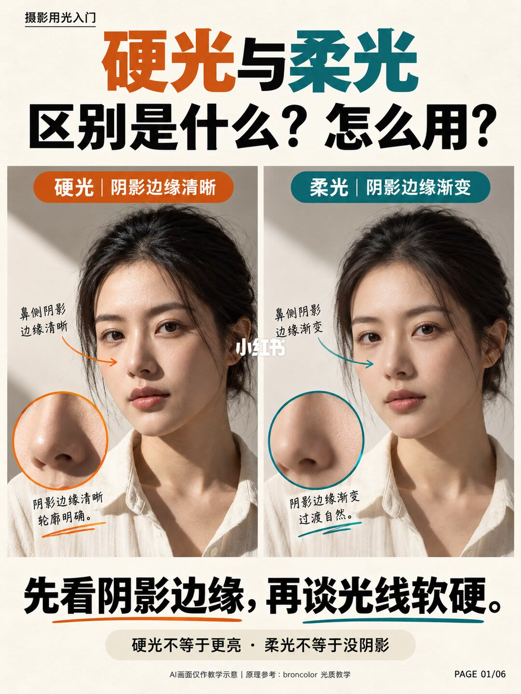
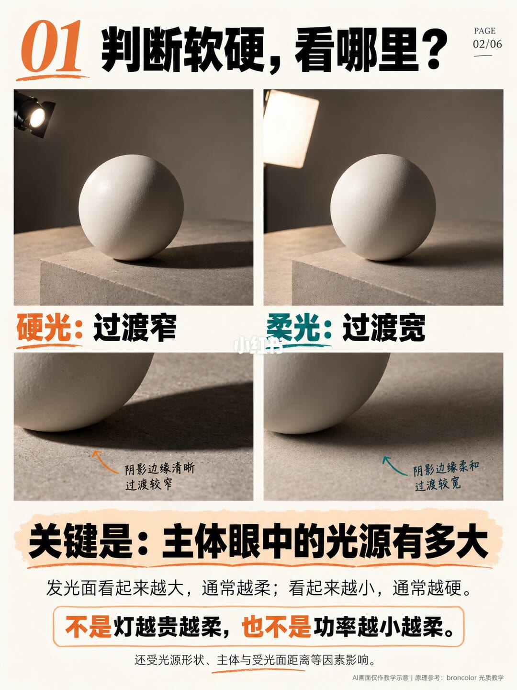
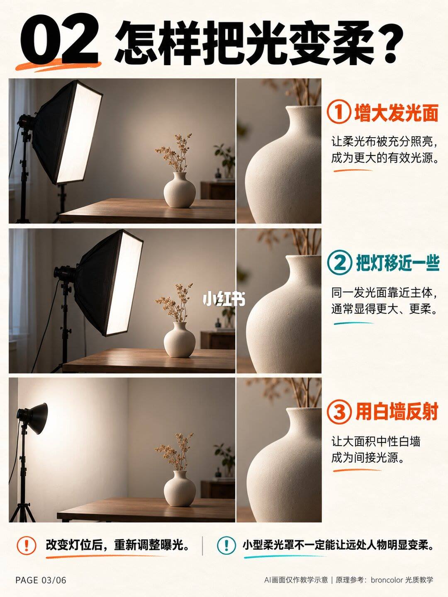
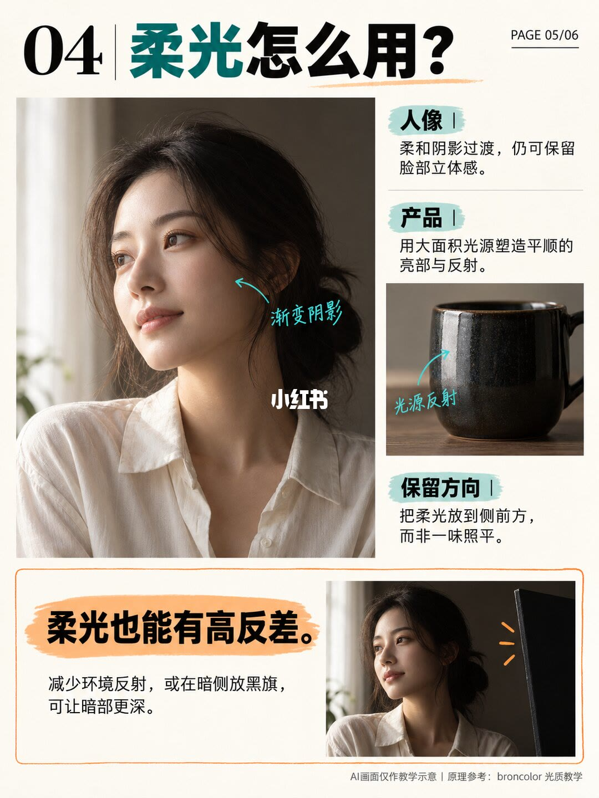
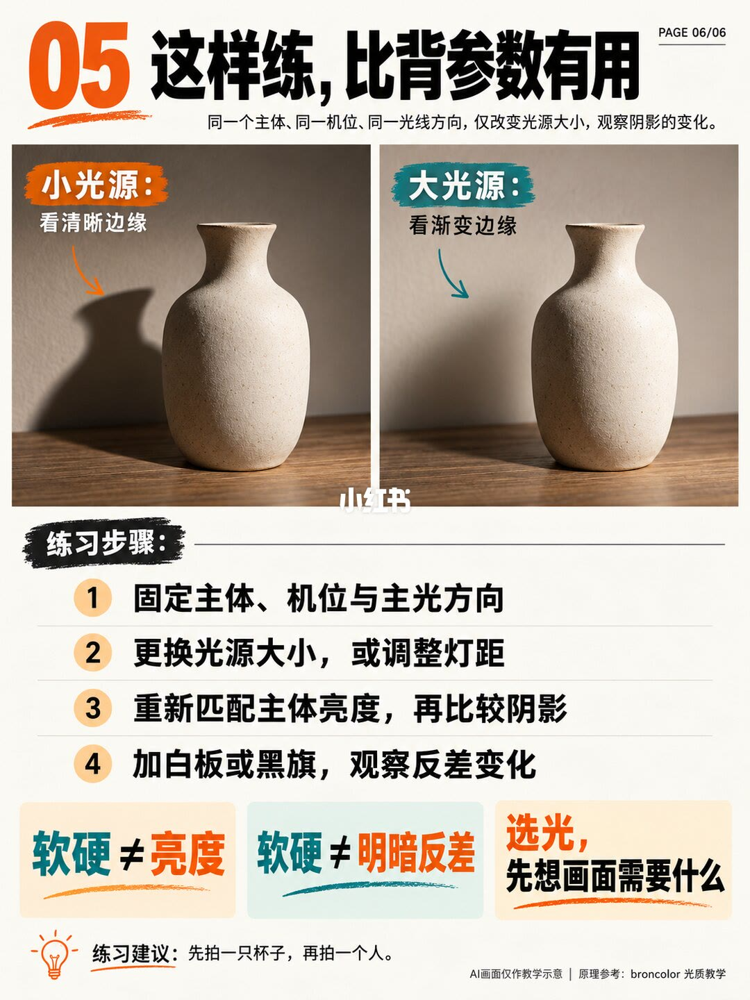

图文实录 · 小红书 · GRANT VISION 竹寺
硬光与柔光的区别是什么？分别怎么用？
软硬不看灯亮不亮，看阴影边缘窄还是宽。六页图从判断、变柔、硬光用法、柔光用法，收到一次只改光源大小的练习。画面注明是 AI 示意，原理参考 broncolor 的光质教学。
1/6
先看鼻侧那条阴影
同一张白衬衫人像分成两边。硬光一侧鼻影边缘清楚，柔光一侧边缘渐变。页脚写：硬光不等于更亮，柔光不等于没有阴影。先看阴影边缘，再谈软硬。

2/6
主体眼里的光源有多大
白球对照：小光源投下的影子过渡窄，大柔光箱过渡宽。关键句是：发光面看起来越大通常越柔，看起来越小通常越硬。不是灯越贵越柔，也不是功率越小越柔。光质还受光源形状和灯到主体的距离影响。

3/6
三种把光变柔的办法
一是把柔光布照满，让有效发光面变大。二是同一块发光面靠近主体，它看起来更大、更柔。三是把灯打向中性白墙，让墙成为间接光源。改完灯位要重新曝光。小型柔光罩不一定能让远处的人明显变柔。

4/6
硬光用来定形
硬光给出清楚的明暗边界和投影。三个用法：侧向硬光突出表面纹理；让清楚的影子进入构图；戏剧感人像和静物。暗部太黑可以用反光板补光，补光降低反差，不等于把主光变柔。页上写这些是拍摄建议，不是固定规则。
5/6
柔光仍然要有方向
人像用渐变阴影，脸上仍能看出立体。产品用大面积光源做出平顺的高光和反射。柔光放在侧前方，不要只把脸照平。柔光也能高反差：减少环境反射，或在暗侧放黑旗，暗部会更深。

6/6
一次只改光源大小
同一主体、同一机位、同一光向，只改光源大小，看影子从清晰边缘变成渐变边缘。练习四步：固定主体、机位和主光方向；改变光源大小或灯的距离；重新把主体亮度对齐再比影子；加白板或黑旗，看反差变化。三句纠偏：软硬不是亮度，软硬也不是明暗反差，选光先想画面要什么。建议先拍杯子，再拍人。

汇总
边缘、大小、反差是三件事
第 1–2 页定义软硬：看阴影过渡宽窄，宽窄来自主体眼里的光源大小。第 3 页把光源变大或移近。第 4–5 页说明硬光负责清楚的形，柔光仍要方向，反光板和黑旗改的是反差，不改光质。示例图是 AI 示意，broncolor 被写成原理来源，笔记没有摘录原文段落。